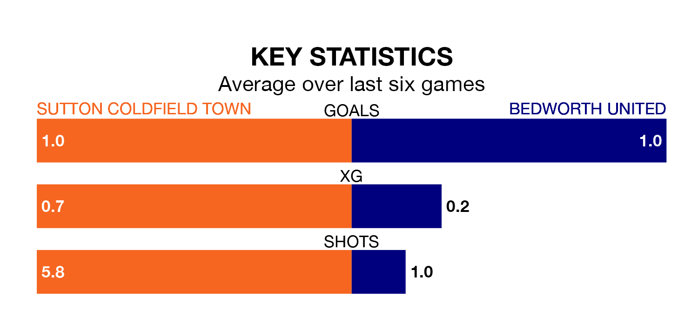

Sutton Coldfield Town are on a terrible run ahead of hosting Bedworth United at the Central Ground on Saturday, with just two points collected from their last six games.
Sutton Coldfield have picked up two draws and four losses in their last six Northern Premier League Division One – Midlands games, and face a Bedworth side whose last six games have brought one win and two draws.
With 31 goals in 29 games so far this season, Bedworth are scoring at below the league average rate with 1.1 goals per game. But they are conceding fewer than average too, letting in 36 goals at a rate of 1.2 per game.
Sutton Coldfield, meanwhile, are above average scorers, with 1.6 goals per game, compared to a league average of 1.5. They have conceded 1.5 goals per game.
In the last five years, Sutton Coldfield and Bedworth have played each other on five occasions. Sutton Coldfield won four of them and Bedworth one.
On average, Sutton Coldfield scored 1.6 goals and Bedworth 0.2 in those matches.
Their last meeting was on October 7, when Sutton Coldfield won 1-0 away.
United are 13th in the table after 29 games, of which they have won nine and drawn seven, earning 34 points.
Town are two places ahead of the away team in 11th, with 10 wins and six draws putting them on 36 points.
Sutton Coldfield's last match was on February 17, a 4-2 loss against Loughborough Dynamo.
Bedworth beat Spalding United 2-1 last time out, also on February 17.
Updated: 12:18 (UTC), 19/02/24